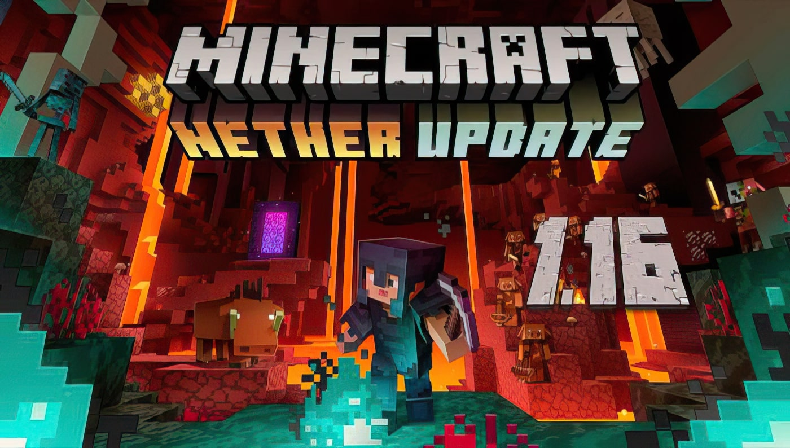

Minecraft
RECENT POSTS
History of Minecraft
Minecraft is a game the has gone through many iterations in its over 10 year lifespan. From many beta releases to the full release and years after that. When I started played minecraft the were in release 1.8.
This was an update where most of the fundamentals of the game were set in stone, but many new blocks were added. The ocean temples were added as another way for players in the endgame to challenge themeselves. Its completely submurged so the player has to make potions to not die of drowning. The "boss" of it is the elder guardians, there are 3 of them and they all give the player the effect mining fatigue, making the player unable to mine block down there. To win you have to kill all 3 of them, there is a lot of gold avalaible upon completion. Additionally a new enchant and a new staus effect was added.
The next update, (predicably) was called 1.9. One of the 2 big addition in minecraft 1.9 was a reworked combat system. Before how good you were at combat was dependant on your CPS or how many times you could click per second. Now it was depedant on how dgood you were at sheilding and how well timed your strikes were. They put a cooldown on attacks only allowing you to attack for full damage when the cooldown was over. The other big additon was a massive change to the end. There were now islands other the the one the ender dragon was on. You could raid the end cities on those islands and get loots, everything from new armor to an elytra. These allowed the player to glide around the minecraft world and travel around quicker than ever before.
After this, the next updates minecraft 1.10, 1.11, and 1.12 were realatively minor. They added a few blocks, some mobs and a new struture, the woodland mansion, that the player can kill the mobs in and coquer for loot. They added new block colors so you can building with a more extensive pallette as well.

Next, the was minecraft 1.13 or update aquatic. It truly fleshes out the oceans of minecraft to make them feel truly live. Adding fish, plants and shipwrecks.
Then there was minecraft updates 1.14 and 1.15, but fairly smaller the rewqorkied villagers and made thier houese fit the biome they were in and added bees respectively.
Lastly, this bring us to the most modern updtaes: 1.16, 1.17, and 1.18. 1.16 was the nether update. It added a new struture: bastions, with more loot for the player to get and some more mobs: the piglins, to fight. It added new biomes, allowing trees to naturally spawn in the nether for the first time in the forests. It made the nether less boring as there was more diversity in how it looked.
1.17 andf 1.18 were world changing updates... In the way that they litterally changed world generation, increasing the max block height and the block depth, by a combined 120 blocks. This gave the player more breataking secenery and more options to building as weel as completely redsigning the caves making that far less "samey" and boring.